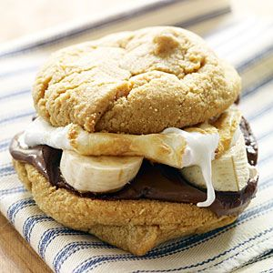

Ingredients
- 8 whole graham crackers
- 1/4 cup Nutella
- 1/4 cup marshmallow fluff
- 2 small, ripe bananas, sliced 1/4 inch thick
- 2 tablespoons salted, roasted hazelnuts, chopped
- Four 8-inch squares of parchment paper
- Four 12-inch squares of heavy-duty aluminum foil
Directions
- Light a grill. Spread 4 graham crackers with the Nutella; spread the remaining 4 with marshmallow fluff. Press the bananas onto the Nutella and sprinkle with the hazelnuts. Sandwich the graham crackers together. Wrap them in the parchment paper and then in foil.
- Grill the s'mores over moderate heat for about 10 minutes, turning once or twice, until the marshmallow fluff is gooey and lightly toasted. Remove the foil, peel back the parchment and serve.